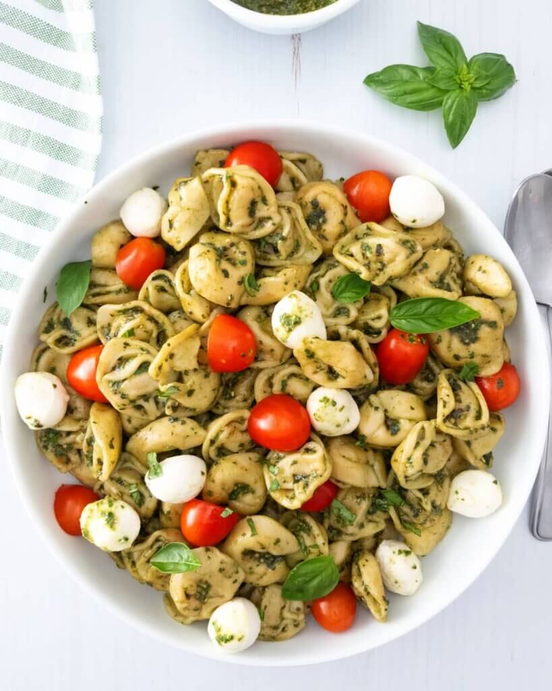

Tortellini Caprese

Description
This simple pasta salad pairs great with baked chicken or
is hearty enough to eat on its own. The classic combination of tomato, basil,
and mozzarella along with the short list of steps are sure to make this easy-to-make
dish one of your go-to comfort foods.
Ingredients
- 20 oz pack tortellini
- 10 oz cherry tomatoes
- 8 oz mozarella pearls
- 1 cup fresh basil leaves
- olive oil
- balsamic vinegar
- salt
- pepper
Steps
- Cook the tortellini according to the package directions.
- While in the strainer, rinse tortellini in cold water. Pat dry,
then place in the fridge until completely cooled
- Slice cherry tomatoes and mozarella into halves.
- Finely chop or tear basil leaves.
- Combine tomatoes, mozarella, tortellini, and basil in a large mixing bowl.
- Drizzle with olive oil (about 1/4 cup) and balsamic vinegar (1 Tbsp)
- Sprinkle with salt and pepper, to taste.
- Mix well, cover, and place in fridge to marinate.
- Serve chilled.
Return to All Recipes